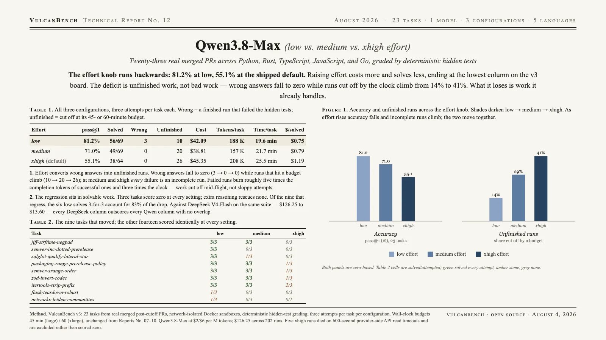

The effort knob runs backwards, further than any model measured here: 81.2% at low, 71.0% at medium, 55.1% at xhigh. That is a 26-point fall to the lowest column on the v3 board, and because xhigh is the API default, an untuned integration gets the worst setting. The deficit is unfinished work, not bad work: wrong answers vanish (3 → 0 → 0) while runs that never finish climb from 14% to 41%. The three tasks it cannot solve fail at every setting; six that low solves 3-for-3 account for 83% of the drop. At $126.25 against DeepSeek V4-Flash’s $13.60 on the same suite, and 19.6–25.5 minutes per task, it is the most expensive and slowest model on the board.

| Effort | pass@1 | Solved | Wrong | Unfinished | Cost | Tokens/task | Time/task | $/solved |
|---|---|---|---|---|---|---|---|---|
| low | 81.2% | 56/69 | 3 | 10 | $42.09 | 188 K | 19.6 min | $0.75 |
| medium | 71.0% | 49/69 | 0 | 20 | $38.81 | 157 K | 21.7 min | $0.79 |
| xhigh (default) | 55.1% | 38/64 | 0 | 26 | $45.35 | 208 K | 25.5 min | $1.19 |
pass@1 is the mean per-task success rate across attempts, so uneven attempt counts do not bias it. Wrong = a finished run that failed the hidden tests; unfinished = cut off at the wall-clock or step budget. The xhigh column has 64 runs rather than 69 because five died on 600-second provider-side API read timeouts and are excluded rather than scored zero. Qwen’s documented effort enum is low/medium/xhigh — there is no high — and xhigh is what the API uses when the field is unset.
The knob runs backwards, and steeply. Low leads xhigh by 26 points, more than triple the 9-point inversion Report No. 10 recorded for Claude Opus 5, and far outside the noise: standard errors are ±7.8, ±9.4 and ±9.7 points, and low-vs-xhigh does not overlap.
Effort converts wrong answers into unfinished runs. Wrong answers fall to zero (3 → 0 → 0) while runs that hit a budget climb (10 → 20 → 26). At medium and xhigh every single failure is an incomplete run. Failed runs burn roughly five times the completion tokens of successful ones and three times the clock — work cut off mid-flight, not sloppy attempts.
The regression sits in solvable work. Three tasks score zero at every setting and extra reasoning rescues none of them. Of the nine that regress from low to xhigh, the six that low solves 3-for-3 account for 83% of the drop, three collapsing to zero. It is not losing the hard problems; it is losing the ones it already knows how to do.
Most expensive, slowest, and beaten on every axis. The sweep cost $126.25 against $13.60 for DeepSeek V4-Flash on the identical suite. Every DeepSeek column (88.4 / 87.3 / 85.5) outscores every Qwen column (81.2 / 71.0 / 55.1) with no overlap, at $0.08 per solved task against $0.75–1.19. At 19.6–25.5 min/task it is the slowest model measured on v3, ahead of Kimi K3 at 17.2.
A second clock, imposed by the provider. Five xhigh runs on the suite’s heaviest repositories failed with 600-second read timeouts from the DashScope endpoint — a single request exceeding ten minutes, well inside the harness’s own 45- and 60-minute budgets. No previous report has recorded this. At its default effort, the model can exceed its own provider’s response window.
| Task | low | medium | xhigh |
|---|---|---|---|
| jiff-strftime-negpad | 3/3 | 3/3 | 0/3 |
| semver-inc-dotted-prerelease | 3/3 | 0/3 | 0/3 |
| sqlglot-qualify-lateral-star | 3/3 | 1/3 | 0/3 |
| packaging-range-prerelease-policy | 3/3 | 3/3 | 1/3 |
| semver-xrange-order | 3/3 | 3/3 | 1/3 |
| zod-invert-codec | 3/3 | 3/3 | 1/3 |
| itertools-strip-prefix | 3/3 | 3/3 | 2/3 |
| flask-teardown-robust | 1/3 | 0/3 | 0/3 |
| networkx-leiden-communities | 1/3 | 0/3 | 0/1 |
Cells are solved/attempted. Never solved at any setting: aiohttp-upgrade-deferred, pennylane-trotter-fragmented, sqlglot-canonicalize-internal-names. Of the 56 unfinished runs across the sweep, 38 died at the 45-minute (large) or 60-minute (xlarge) wall-clock boundary and only three hit the step ceiling; none was cost-capped. The clock, not the step budget, is what binds.
VulcanBench v3: 23 tasks from real merged post-cutoff PRs (Python 9, TypeScript 4, Rust 4, Go 3, JavaScript 3), network-isolated
Docker sandboxes, deterministic hidden-test grading, three attempts per task per configuration. Budgets scale with repository size
— 50–200 steps and 5–60 minutes — identical for every model on the board and unchanged since Report No. 07.
Qwen3.8-Max priced at $2/$6 per million tokens on the international (Singapore) endpoint. Caveats: with an unlimited
budget xhigh might close some of the gap, so this measures capability under a fixed budget rather than a capability ceiling; Qwen also
exposes a thinking_budget cap that was not tested, because its API rejects that parameter alongside
reasoning_effort, and it is the knob most likely to address the pattern documented here. Unlike Reports No. 07, 08
and 10, every column in this report is three attempts per task; the single-attempt columns those reports established carry wider
uncertainty by comparison. The open-weights sibling, Qwen3.8-27B (Report No. 17),
runs the same knob backward but far more gently, dropping 8.7 points across low to xhigh rather than the Max’s 26.
{kind=link}